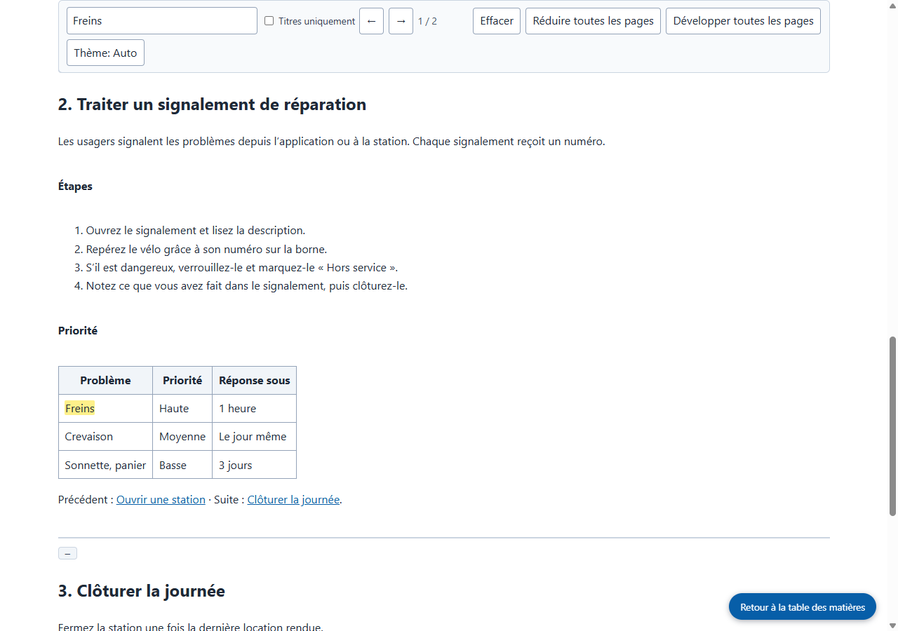

Résultats réels de Grab All Files
Quatre pages du manuel réunies dans un seul fichier HTML (Pro)
À partir de la page de sommaire d’un manuel fictif, les trois chapitres liés ont été suivis et les quatre pages réunies dans un seul fichier HTML. Le sommaire en haut renvoie à chaque chapitre, et le champ de recherche porte sur tout le document. Les liens entre chapitres mènent à la page correspondante à l’intérieur du fichier enregistré. La figure est stockée dans le fichier sous forme d’image.
Fichiers produits
Le HTML enregistré, ouvert et recherché avec le mot « Freins » (capture réalisée par le site)

Comment il a été réalisé
- Page source
- /samples/source/fr/bike-share-handbook/
- Extension
- Grab All Files 5.8.31
- Navigateur
- Chrome 156.0.8078.48 (Windows 11)
- Formule
- Pro
- Réalisé le
- 2026-10-28
- Réglages
- Pages : Suivre les liens de cette page (4 pages)
- Apparence : Facile à lire
- Sortie : HTML avec sommaire et recherche
- Données pour l’IA : Ne pas générer (par défaut)